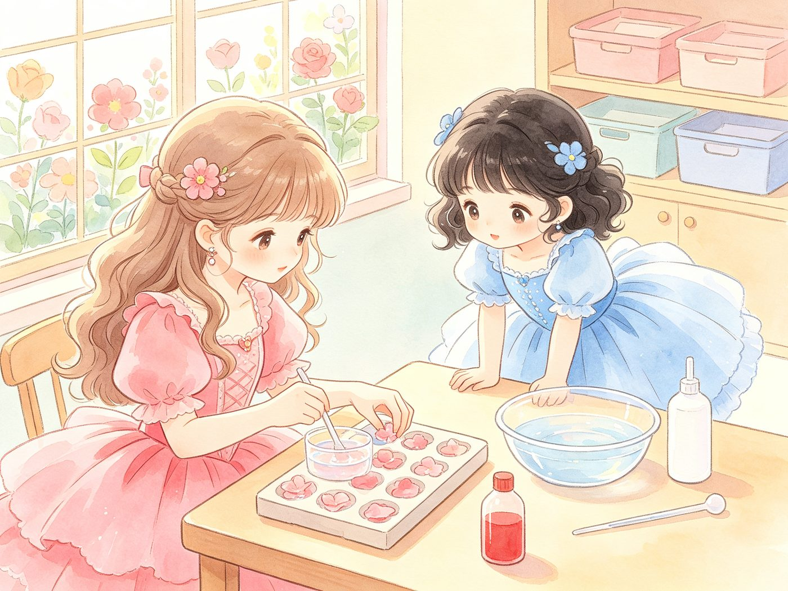
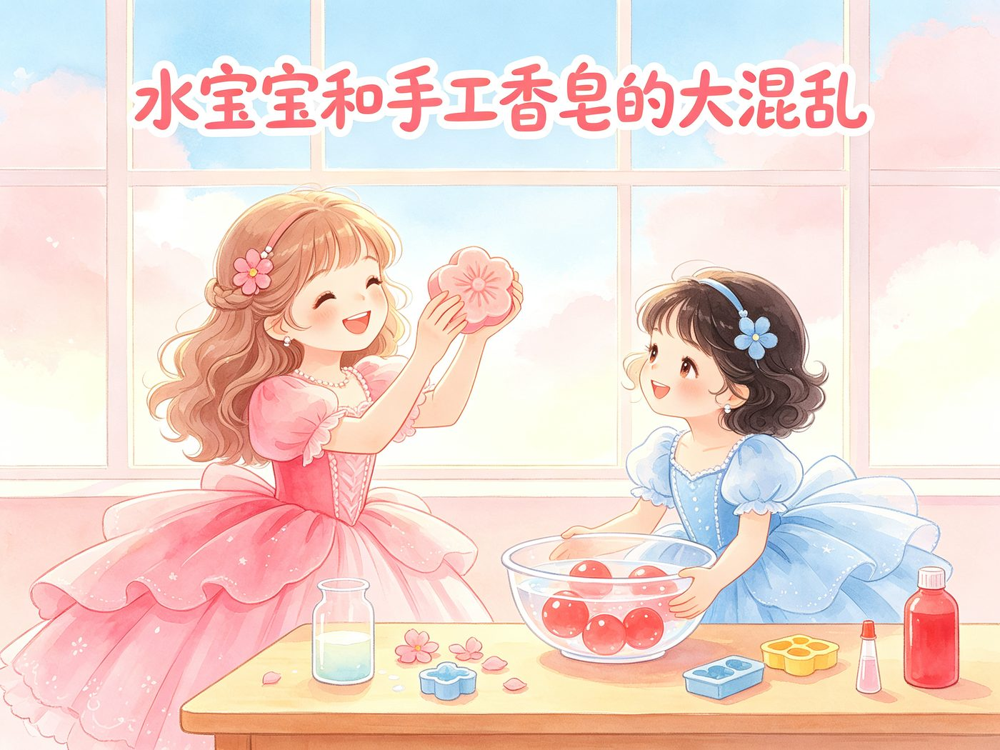
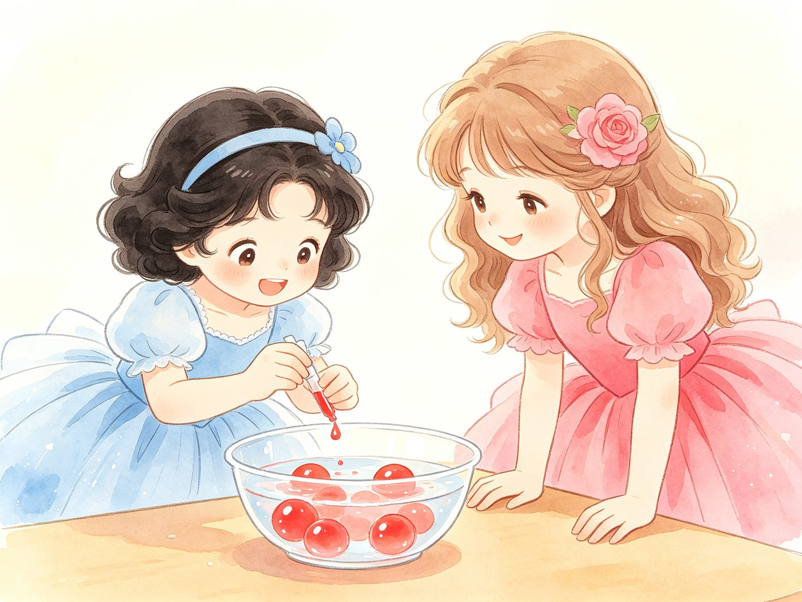
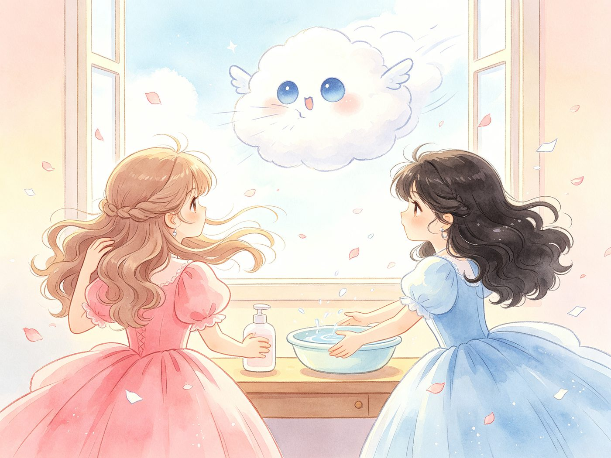
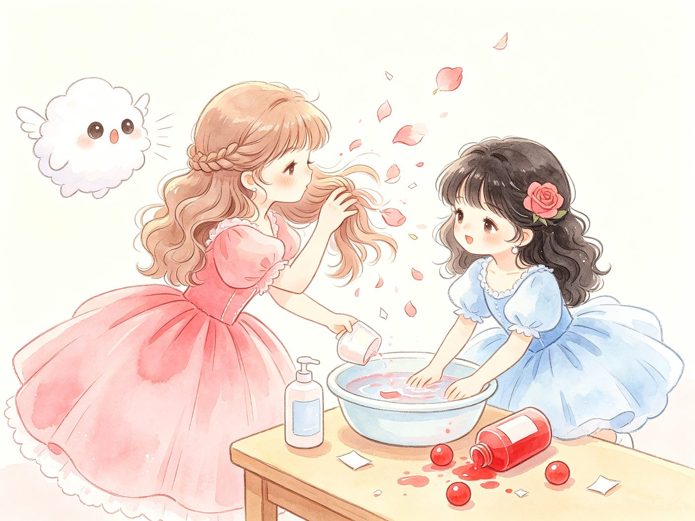
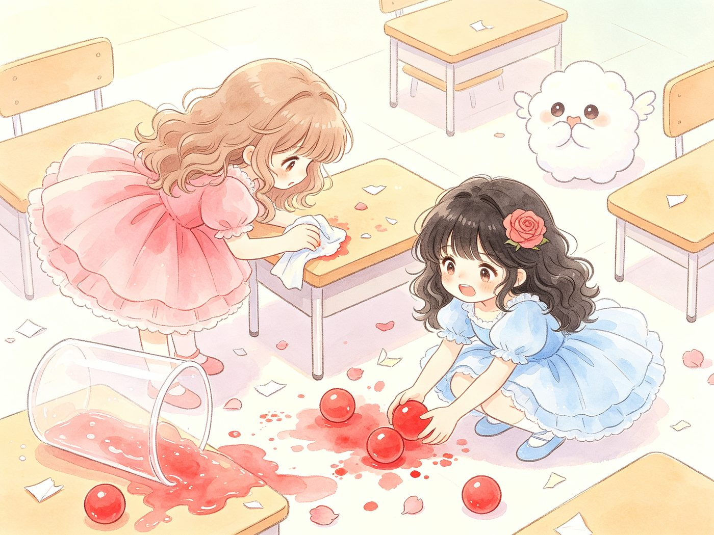
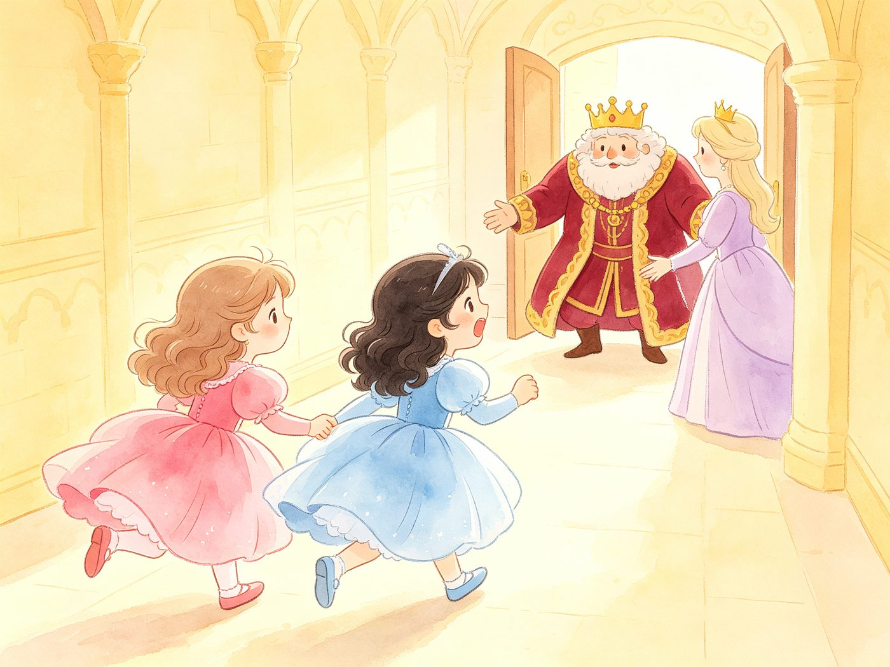
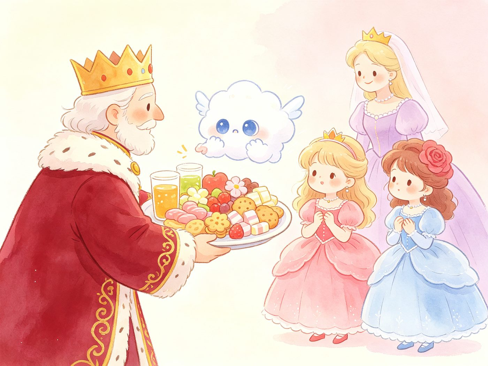
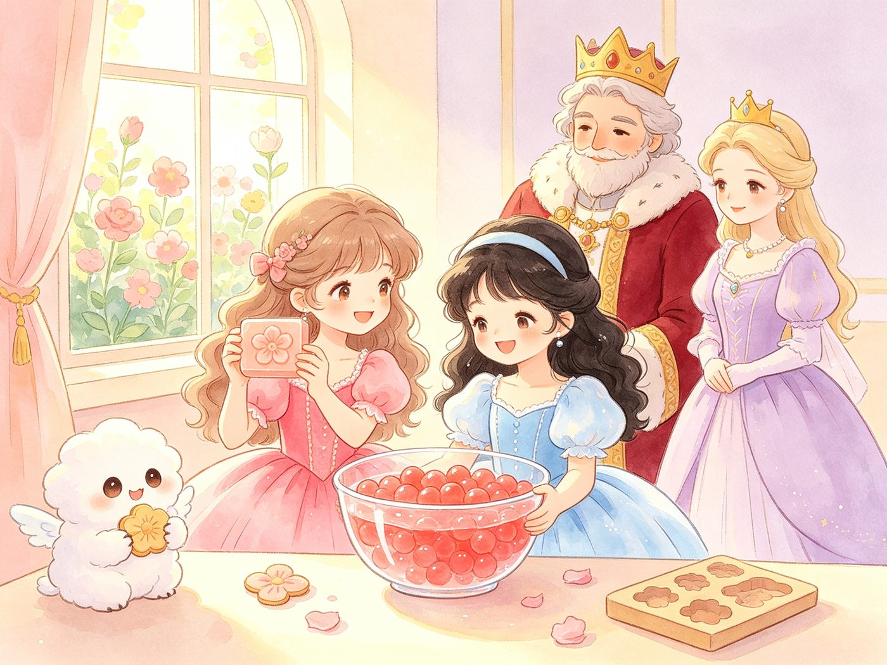

第 2 页
手工课开始啦
阳光明媚的一天，百花城堡的手工教室里，两位小公主准备做有趣的手工。蔷薇公主要做香香的花朵香皂，玫瑰公主要做神奇的水宝宝。清水、红色染料、白色溶解剂和小滴管，全都准备好啦！
手工课大冒险 · 调皮妖怪又来捣蛋

蔷薇公主做香香的手工香皂，玫瑰公主滴呀滴呀做水宝宝！可调皮的小风妖怪又跑来捣蛋啦……
马卡龙柔和画风 · 水彩晕染 · 圆润软萌 · 高清适合打印
穿着粉红色蓬蓬裙，浅棕色微卷长发上别着粉色小花。温柔又调皮，最喜欢种花和做手工，今天要做一块香香的花朵香皂。
穿着蓝色蓬蓬裙，浅黑色软卷发，眼睛亮晶晶。她是蔷薇公主亲手种出来的宝贝公主，今天要用小滴管做圆滚滚的水宝宝。
温柔又厉害的花国王、花王后，穿着华丽的礼服。风妖怪捣蛋的时候，是他们用一大盘美味零食把它哄得乖乖的。
白色毛茸茸的云朵小妖怪，长得软萌可爱，就是太贪玩啦。看见好玩的东西就想呼呼吹一吹，最爱吃小零食。
翻开故事，看看两位小公主的手工课遇到了什么大麻烦

阳光明媚的一天，百花城堡的手工教室里，两位小公主准备做有趣的手工。蔷薇公主要做香香的花朵香皂，玫瑰公主要做神奇的水宝宝。清水、红色染料、白色溶解剂和小滴管，全都准备好啦！

玫瑰公主拿起细细的小滴管，先吸进红色染料，再吸进白色溶解剂。一滴，又一滴——扑通！扑通！一颗颗圆滚滚、亮晶晶的红色水宝宝，在水里慢慢长出来啦！蔷薇公主在一旁开心地看着妹妹。

就在手工做得最顺利的时候——呼！呼呼！调皮的小风妖怪又冲进来啦！它鼓起腮帮子用力一吹，蔷薇公主的长发飘了起来，水盆里的水面也跟着晃呀晃。

风妖怪越吹越起劲！蔷薇公主的长发被吹得四处飘散，扫过桌面；玫瑰公主急忙护住水盆，可是红色染料歪向一边，几颗水宝宝已经滚到了桌子边缘。空中还飘起了散落的花瓣。

装皂液的容器倒了，透明皂液流了出来；水盆剧烈摇晃，红色染料洒在桌上，水宝宝滚落一地。蔷薇公主赶紧擦皂液，玫瑰公主蹲下捡水宝宝。可大风不停，越收拾越乱，整个手工教室乱成一团！

姐妹俩忙得满头大汗，还是拦不住调皮的风妖怪。蔷薇公主拉起妹妹的小手：「我们对付不了它，快去找爸爸妈妈帮忙！」两个小公主哒哒哒跑出教室，穿过长长的走廊，去找国王和王后。

国王端来一大盘美味零食：水果软糖、花朵饼干、香甜奶片，还有花蜜果汁。国王温柔地说：「不捣乱、不吵闹，这些好吃的都给你！」风妖怪盯着香喷喷的零食，心里纠结极了，一会儿吹吹风，一会儿又看看盘子。

最后，美食战胜了贪玩。风妖怪乖乖停下，蹲在一旁吃零食。教室安静下来啦！蔷薇公主做出了香香的花朵香皂，玫瑰公主做出了满满一盆圆滚滚的红色水宝宝。大家开开心心，度过了愉快的下午。
完
水宝宝和手工香皂讲完啦，遇到麻烦不要怕，自己搞不定，就去找爸爸妈妈帮忙哦